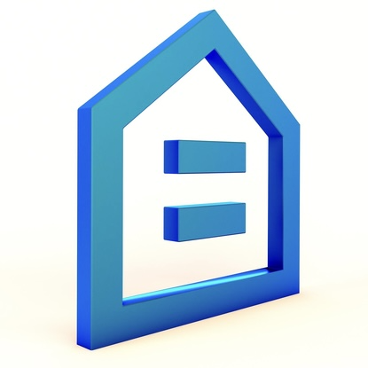

CompAdjuster
Residential adjustment support
Private appraiser beta
Adjustment support that keeps the math with the workfile.
CompAdjuster turns land sales and selected comparables into clear, defensible adjustment support for residential appraisal reports.
Decision Console
Private reports
Current Adjustment Schedule
Each beta user signs in with their own account, imports their own data, and reopens saved reports exactly where they left off.
$4.25
Reconciled site adjustment
$95
Market-weighted indication
$11k
Half baths apply at 50%
$12k
Per attached garage space
Built for appraisal workflow
The beta app is designed around the practical sequence of subject entry, land analysis, comparable review, adjustment reconciliation, and report-ready export.
Private report memory
Saved reports are isolated by login, including subject facts, imported land sales, comps, reconciled adjustments, and export support.
Defensible support
Market methods remain the anchor, with sensitivity, bracketing, and central range checks available for additional support.
Professional exports
Create concise summary exhibits, fuller support reports, or workfile packages for review and lender follow-up.